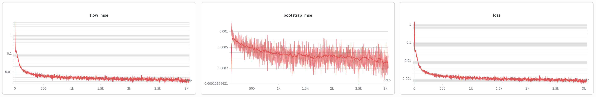
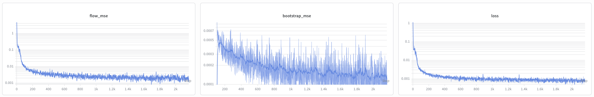

월드 모델
들어가며
박사 과정 내내 나를 사로잡았던 질문은 어떻게 하면 인간처럼 생각하는 기계를 만들 수 있을까? 였습니다. 여러 이유로 나는 프로그램 합성(program synthesis) 이 그 열쇠가 될 거라고 믿었고, LLM과 program induction 연구에 오랜 시간을 쏟았습니다.
그러다 최근 월드 모델이라는 개념이 눈에 들어왔습니다. 신경과학에는 우리 뇌가 미래를 시뮬레이션해서 의사결정을 한다는 증거가 넘쳐납니다. 월드 모델은 실제 로보틱스 문제를 풀기 시작했고, Genie 3는 비디오 게임 제작 자체를 무력화할지도 모른다는 생각마저 들었습니다.
처음엔 프로그램 합성으로 세계의 dynamics를 모델링하는 프로젝트를 시작했습니다. 하지만 하면 할수록 이 접근법으로 실제 로보틱스를 풀기는 어렵다는 걸 인정할 수밖에 없었습니다.
프로그램 합성이 그 어떤 real world 문제도 못 푼다는 게 아닙니다. 입출력이 이미 강하게 구조화 되어있는 있는 도메인에서는 프로그램 합성이 강력할 수 있습니다. 즉, 컴퓨터 앞에 앉아서 하는 지식 노동의 상당 부분은 LLM + 프로그램 합성 조합으로 풀릴 가능성이 높습니다. 하지만 실제 로보틱스는 너무 노이즈가 많아, 프로그램이 주가 되는 시스템으로는 감당하기 어렵습니다 (하지만, 프로그램을 통해 학습 데이터를 생성하는 것은 가능할지도 모르죠).
프로그램에서 신경망으로
이 사실을 깨달은 뒤 신경망 기반 월드 모델로 눈을 돌렸고, Dreamer 4를 발견했습니다. Dreamer 4는 Minecraft 환경을 시뮬레이션하고, 그 모델의 "상상" 안에서 정책을 학습하는 월드 모델입니다. 또한 오프라인 인간 플레이 로그만으로 학습해 Minecraft에서 다이아몬드를 채굴하는 데 성공한 최초의 모델입니다.
이게 함의하는 바는 다음과 같습니다. 로봇 학습이 어려운 근본적인 이유 중 하나는 실제 환경에서 시행착오 학습을 할 수 없다는 것입니다. 즉 실수를 하면 로봇이 뭔가를 부수게 되고, 비용을 감당할 수 없을 겁니다. 하지만 만약 오프라인 데이터만으로 의미 있는 성능을 낼 수 있다면, 로보틱스에도 비슷한 길이 열립니다. 원격 조작 데이터나 인간이 수집한 1인칭 시점 데이터만으로 실제 환경에서 잘 동작하는 로봇을 만들 수 있을지도 모릅니다.
그래서 Dreamer 4의 월드 모델을 직접 구현하기 시작했습니다 (아쉽게도 논문 코드는 공개되지 않았습니다). 가능하다면 개선도 해보려고 했습니다. 이 포스트는 그 여정의 기록이자, 월드 모델을 처음 접하는 분들을 위한 입문 자료이기도 합니다.
github.com/p-doom/jasmine 코드베이스를 시작점으로 삼았기 때문에 JAX와 flax.nnx를 사용했고,
github.com/edwhu/dreamer4-jax도 많이 참고했습니다.
월드 모델이란?
우리가 테이블 위의 커피잔을 옮길 때, 잔이 테이블을 통과할지 실제 세계에서 물리적으로 확인해보지는 않습니다. 왜냐하면 우리의 뇌가 다음에 일어날 일을 예측하는 시뮬레이션을 자동으로 실행하기 때문입니다. 그 내부 예측 시뮬레이터가 바로 월드 모델입니다.
AI에서는 신경망으로 이를 모사합니다. 현재 관측 $o_t$와 행동 $a_t$가 주어졌을 때, 다음 관측 $o_{t+1}$을 예측합니다. 실제로는 (특히 입력이 비디오처럼 고차원인 경우) 압축된 latent 공간에서 예측하고 픽셀로 디코딩하는 방식을 많이 씁니다.
이런 모델을 갖게 되면, 에이전트는 실제 환경과 상호작용하지 않고도 가상의 행동 시퀀스와 관측을 상상해볼 수 있습니다. 월드 모델 안에서 계획을 세우거나, 학습을 할 수 있는 거죠. 이는 실제 환경에서의 시행착오 비용이 엄청난 로보틱스 분야에서 특히 가치 있습니다.
아키텍처
Dreamer 4는 두 가지 구성 요소로 이루어집니다: 비디오 토크나이저와 다이나믹스 모델 입니다.
비디오 토크나이저는 고차원 비디오를 저차원 latent token으로 변환합니다. 다이나믹스 모델은 이 latent space에서 미래를 예측하므로, 타임스텝당 연산량을 크게 줄일 수 있습니다.
비디오 토크나이저는 masked autoencoding loss로 학습됩니다. 이는 비디오 토크나이제이션에서 꽤 표준적인 방식입니다. 간단히 말하면, 입력 token 일부를 랜덤하게 마스킹하고, 인접 token과 과거 token을 바탕으로 마스킹된 부분을 복원합니다. Dreamer 4 토크나이저의 독특한 점은 latent를 추출하는 방식입니다. 이미지를 직접 token으로 매핑하는 대신, special token을 입력에 이어 붙여 인코더에 통과시킨 뒤, 해당 special token의 출력을 latent로 읽어냅니다.
Latent bottleneck의 압축 비율은 (1) special token 수, (2) 최종 projection 레이어의 출력 차원으로 결정됩니다. 예를 들어 special token 32개를 쓰면 latent token도 32개가 됩니다. Projection 출력 차원이 64라면, 프레임 하나는 32×64 행렬로 표현됩니다. 비디오 길이가 64 프레임이면, 전체 latent tensor는 64×32×64가 됩니다.
이 설계 덕분에 다이나믹스 모델의 연산량을 세밀하게 조절할 수 있습니다. Latent token 수를 늘리면 다이나믹스 모델이 타임스텝마다 더 많은 token을 처리해야 합니다. 단순히 bottleneck 크기만 조정하는 게 아니라 (latent 차원도 따로 조정 가능), bottleneck 용량과 다이나믹스 연산 intensity를 거의 독립적으로 튜닝할 수 있다는 게 핵심입니다.
다이나믹스 모델은 shortcut forcing이라는 기법으로 학습됩니다. Shortcut forcing은 대략 shortcut model을 diffusion forcing 방식으로 학습하는 것입니다.
Shortcut model은 일종의 flow 기반 모델로, 기존 flow 모델보다 추론이 빠릅니다. 개념적으로는 두 개의 fine 스텝을 이어붙인 것을 target으로 삼아 하나의 coarse 스텝을 학습합니다.
Diffusion forcing은 학습 시 각 프레임에 무작위 노이즈를 주입한 뒤 denoising하도록 모델을 학습합니다. 추론 시에는 깨끗한 컨텍스트를 제공하고 마지막 프레임에 노이즈를 추가하면, denoising이 autoregressive하게 비디오를 생성합니다.
속도와 성능을 위한 추가 기법도 많이 사용됩니다. Time-space axial transformer로 어텐션 비용을 줄이고, RMSNorm, RoPE 같은 LLM 기법도 적극 활용됩니다. 신호 수준이 낮은 샘플의 손실을 줄이는 ramp loss도 있습니다. 더 자세한 내용은 Dreamer 4 논문을 참고하세요: arXiv:2509.24527.
학습
저는 A100 4장을 쓸 수 있었는데, 그마저도 대기 때문에 항상 쓸 수 있는 건 아니었습니다. 모든 디자인적 선택을 전부 실험해볼 여유가 없었기 때문에, 처음부터 최대한 효율적으로 학습해야 했습니다.
제 생각에 Dreamer 4의 가장 큰 강점은 긴 컨텍스트 길이로 학습한다는 점입니다. MineWorld나 Oasis가 0.8s / 1.6s 컨텍스트(16 / 32 프레임)를 쓰는 것과 달리, Dreamer 4의 9.6s 컨텍스트(192 프레임)는 어마어마하게 긴 축에 속하고, 이는 long horizon 시뮬레이션에 큰 도움이 됩니다.
Dreamer 4는 TPU 1024개로 이걸 해냈지만, 저는 타협이 필요했습니다. Minecraft에서는 최대 컨텍스트 길이를 64 프레임으로 설정했고, Dreamer 4처럼 짧은 배치(16 프레임)와 긴 배치를 섞어 학습했습니다.
CALVIN에서는 더 작은 모델을 써서 최대 96 프레임을 사용했고, 마찬가지로 24 프레임 짧은 배치와 혼합했습니다.


추론
모델을 학습하고 첫 validation 루프에 들어갔을 때, validation이 비정상적으로 오래 걸린다는 걸 발견했습니다. 여러 프레임에 걸친 오토리그레시브 생성이 느린 건 당연하지만, 검증이 전체 학습 시간의 1/3을 차지하고 있었고, 이건 분명히 정상이 아니었습니다. 문제의 원인은 꽤 복잡한 것으로 드러났습니다.
처음에는 KV 캐시를 구현하지 않아서, forward pass마다 컨텍스트를 처음부터 재연산해야 했는데, 원래는 이게 유일한 원인이라고 생각했습니다. KV 캐시를 모델 내부 state로 구현하고 정상 동작을 확인한 뒤 다시 검증을 돌렸는데, 놀랍게도 검증 시간이 전혀 줄지 않았습니다. 존재하지 않는 버그를 찾아 몇 시간을 헤맨 끝에, 이게 버그가 아니라 JAX의 동작 방식 때문이라는 걸 깨달았습니다.
JAX는 연산 그래프를 컴파일하기 때문에, 입력 텐서 모양이 바뀌면 재컴파일이 발생하고 이게 엄청나게 느립니다. 제 경우 KV 캐시가 쌓이면서 시퀀스 길이가 한 스텝씩 늘어났고, 길이가 1 증가할 때마다 재컴파일이 일어나고 있었습니다.
JAX/Flax에서 이 문제를 보통 어떻게 처리하는지 찾아보니, Flax nnx는 캐시를 고정 크기로 초기화하고 제자리에서 원소를 업데이트하는 방식을 씁니다.
그런데 이 기능을 포함한 MultiHeadAttention 클래스가 scaled dot product attention (SDPA)를 감싸고 있어,
쿼리와 키를 직접 수정해야 하는 RoPE와 호환되지 않았습니다.
결국 RoPE와 KV 캐시를 모두 지원하는 새로운 어텐션 클래스를 직접 구현했습니다.
이 새 클래스는 캐시 인덱스 처리 방식도 바꿨습니다: 한번의 forward pass마다 자동으로 인덱스를 증가시키는 대신, denoising이 완료될 때만 수동으로 증가시킵니다 (diffusion/flow 모델은 하나의 index 당 여러번 denoising 하기 때문).
이 클래스 덕분에 추론이 극적으로 빨라졌고, validation 시간은 전체 학습 시간 대비 무시할 수 있는 수준이 됐습니다. 그럼에도, Minecraft에서 한번의 training run은 3~5일이 걸립니다. 언제나 기다리는 게 제일 힘들죠.
데이터셋
jasmine이 Procgen의 coinrun 에서 빠른 프로토타이핑을 지원하기 때문에,
처음 써본 데이터셋은 coinrun이었습니다.
그 결과, 토크나이저와 다이나믹스 모델이 제법 잘 학습되었습니다.
그다음엔 Minecraft로 넘어갔습니다. 학습 데이터로는 OpenAI VPT contractor demonstration을 썼는데, 이건 제가 다뤄본 데이터셋 중 가장 컸습니다. 비디오와 액션 파일이 약 7TB에 달해 서버에 다 받아지지도 않았고, 그래서 원본 360p 영상을 224p로 다운사이즈해야 했습니다.
토크나이저 학습을 시작하자, 이번에는 GPU 사용률이 비정상적으로 낮았습니다. 원인을 조사해보니, 배치를 샘플링할 때마다 약 5분짜리 영상 전체를 읽고 있었습니다.
예를 들어 배치 크기가 32이고 seq_len이 64일 때, 영상이 5분 단위로 저장되어 있으면
배치 하나를 준비하려면 32 × 5분 = 160분의 영상을 읽어야 합니다.
이 시점에서 하드 디스크 I/O가 GPU 스텝 시간보다 느려집니다.
그래서 데이터셋을 3.2초 클립(64 프레임)으로 전처리해야 했고,
결국 300만 개의 3.2초 영상 클립을 준비했습니다.
이 영상 chunking 과정 자체도 엄청 오래 걸렸는데, 토크나이저와 다이나믹스 모델 학습은 말할 것도 없습니다. 그래서 먼저 CALVIN 데이터셋으로 실험했습니다. CALVIN은 로봇 팔 제어 데이터셋으로, 200×200 이미지 관측과 7차원 연속 행동 공간을 사용합니다.
결과
CALVIN에서는 월드 모델의 상상 안에서 로봇 팔이 실제(GT)와 꽤 유사하게 움직이는 걸 볼 수 있습니다. 책상의 causal mechanism (슬라이더로 불 켜기 같은 것) 도 잘 모델링되어 있습니다.
다만 물체 일관성이 잘 유지되지 않습니다 (두 번째 영상에서 보라색 블록 크기가 바뀌는 게 보입니다). 아마도 latent 압축 비율이 너무 커서 flow 모델이 다이나믹스를 정밀하게 생성하기 어려운 것 같습니다. 토크나이저 재구성이 완벽하더라도, latent 공간이 학습하기 쉬운지는 별개의 문제입니다.
현재 압축 비율에서는 latent 공간에서 조금만 움직여도 다른 표현에 매핑될 수 있어, 작은 생성 오류가 시간이 지나면서 크게 누적될 수 있습니다.
그리고 드디어 Minecraft 다이나믹스 모델도 뭔가 배우고 있습니다! 완전히 수렴하려면 아직 며칠 더 학습이 필요하지만, 이미 crafting table 인터페이스나 블록 붙이기같은 Minecraft 환경에 대한 어느 정도의 이해가 보입니다.
다음 단계
먼저 물체 일관성 문제를 해결하기 위해 더 큰 토크나이저 bottleneck으로 재학습할 계획입니다. 특히 latent token 수를 늘릴 생각인데, 이는 그만큼 학습 시간이 더 길어진다는 의미이기도 합니다.
MeanFlow 논문에 따르면, shortcut model보다 훨씬 적은 학습 연산으로 더 좋은 성능을 낸다고 합니다. 그 고통스러운 학습 시간을 줄이기 위해 flow 모델 손실을 MeanFlow 로 바꾸는 것도 고려 중입니다. 커뮤니티에서 MeanFlow가 실제론 불안정하고 어려운 도메인에서 잘 안 된다는 이야기도 있지만, 해봐서 나쁠건 없겠죠.
또 다른 유망한 방향은 장기 기억 개선입니다. 하지만 월드 모델의 장기 일관성만 높이는 것보다, 더 중요한 질문은 world model을 policy와 결합했을 때 기억을 어떻게 효과적으로 활용해 태스크를 풀 수 있는가 입니다.
References
- Hafner, D., Yan, W., & Lillicrap, T. (2025). Training Agents Inside of Scalable World Models. arXiv:2509.24527.
- Google DeepMind. (2025). Genie 3. Website.
- Guo, J. et al. (2025). MineWorld: a Real-Time and Open-Source Interactive World Model on Minecraft. arXiv:2504.08388.
- Decart & Etched. (2024). Oasis: A Universe in a Transformer. oasis-model.github.io.
- Frans, K., Hafner, D., Levine, S., & Abbeel, P. (2025). One Step Diffusion via Shortcut Models. ICLR 2025. arXiv:2410.12557.
- Chen, B. et al. (2024). Diffusion Forcing: Next-Token Prediction Meets Full-Sequence Diffusion. NeurIPS 2024. arXiv:2407.01392.
- Geng, Z. et al. (2025). Mean Flows for One-step Generative Modeling. NeurIPS 2025. arXiv:2505.13447.
- Baker, B. et al. (2022). Video PreTraining (VPT): Learning to Act by Watching Unlabeled Online Videos. arXiv:2206.11795.
- Mees, O., Hermann, L., Rosete-Beas, E., & Burgard, W. (2022). CALVIN: A Benchmark for Language-Conditioned Policy Learning for Long-Horizon Robot Manipulation Tasks. IEEE RA-L. arXiv:2112.03227.